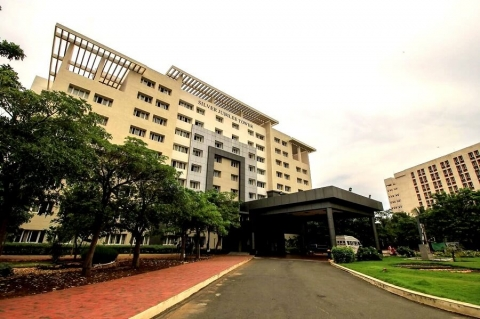

SILVER JUBILEE TOWER

SJT
The Silver Jubilee Tower adds glory to the magnificent and beautiful campus of VIT.
Located at one end of the campus and adjacent to the Girl’s Hostels,
it was inaugurated by Hon’ble Shri G.K Vasan, Minister for Shipping,
Govt. of India on 29th September, 2009 in the presence of Hon’ble Shri
Pranab Mukherjee, former Finance Minister and the Ex-President of our country.
Apart from enormous and spacious classrooms, brilliantly designed smart classrooms
and galleries add to the list of unique features of SJT.
One would see computer labs of international standards in this building.
Located adjacent to the playground and garden, it gives an aesthetic view of the surroundings, and serves as a stress buster and an ideal place for students to learn.
It houses the schools of SITE, SCOPE , COE office, Academic office, VIT BS, PAT Office, and SDC.